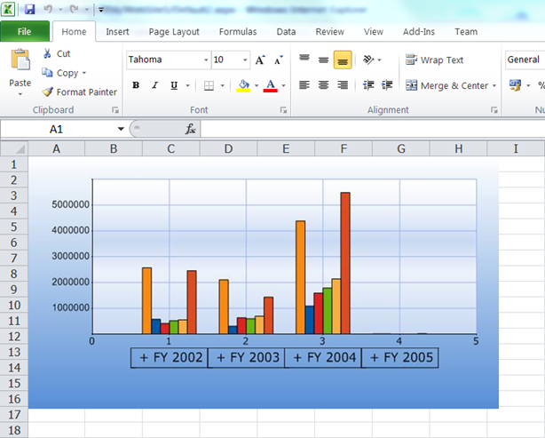

The OLAP Chart control can be exported to an Excel file as an image using Essential XlsIO. The following is the API used for Excel export:
|
[C#] this.olapChart1.ExportToExcel(“exportFileName.xls”); |
|
[VB] Me.olapChart1.ExportToExcel(“exportFileName.xls”) |

Figure 48: Exported to excel document
Table 27: Export To Excel
|
Methods |
Description |
Parameters |
Type |
Return Type |
Reference Link |
|
ExportToExcel(String fileName) |
Exports a chart into a new Excel file with the specified file name. It takes the file name as a parameter. |
string |
Server side |
void |
- |
Sample Location
A sample demo is available at the following location:
..\Syncfusion\EssentialStudio\<Version Number>\BI\Web\OlapChart.Web\Samples\3.5\ Exporting\Exporting Chart Demo\